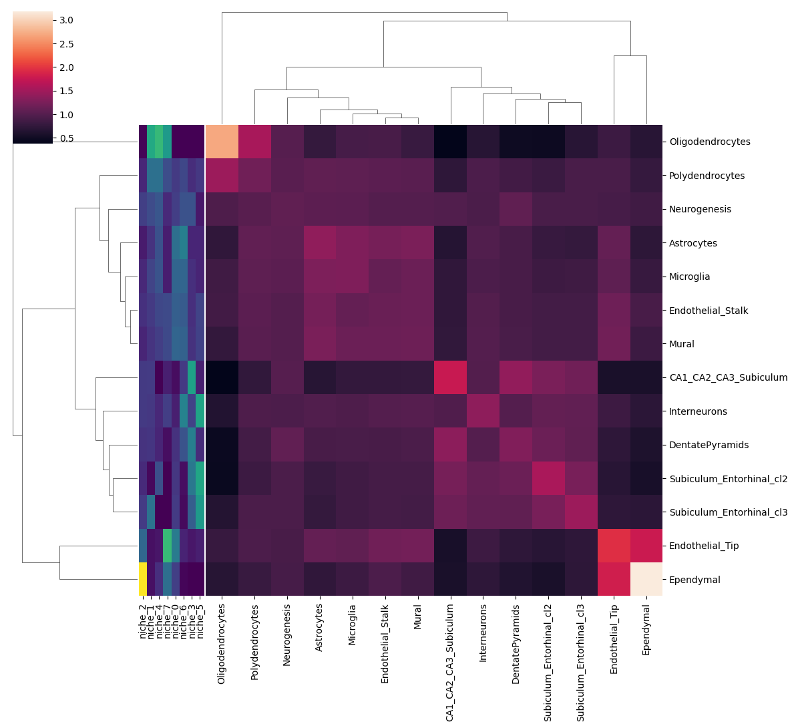

nichefinder - Slide-seqV2 data
This notebook demonstrates the nichefinder analysis pipeline on the Slide-seqV2 mouse hippocampus dataset, loaded directly via squidpy. Label transfer is performed from a matched scRNA-seq mouse cortex reference dataset.
import sys
import logging
import pandas as pd
import scanpy as sc
import squidpy as sq
import matplotlib.pyplot as plt
import seaborn as sns
sys.path.append("../..")
import nichefinder as nf
logging.basicConfig(level=logging.INFO)
/Users/janpatrickpett/miniforge3/envs/nichefinder/lib/python3.11/site-packages/tqdm/auto.py:21: TqdmWarning: IProgress not found. Please update jupyter and ipywidgets. See https://ipywidgets.readthedocs.io/en/stable/user_install.html
from .autonotebook import tqdm as notebook_tqdm
1. Load data
Spatial: Slide-seqV2 mouse hippocampus
The Slide-seqV2 dataset contains spatial transcriptomics data from the mouse hippocampus. Cell type annotations are stored in obs['cell_type'].
spatial_ad = sq.datasets.slideseqv2()
spatial_ad
AnnData object with n_obs × n_vars = 41786 × 4000
obs: 'barcode', 'x', 'y', 'n_genes_by_counts', 'log1p_n_genes_by_counts', 'total_counts', 'log1p_total_counts', 'pct_counts_in_top_50_genes', 'pct_counts_in_top_100_genes', 'pct_counts_in_top_200_genes', 'pct_counts_in_top_500_genes', 'total_counts_MT', 'log1p_total_counts_MT', 'pct_counts_MT', 'n_counts', 'leiden', 'cluster'
var: 'MT', 'n_cells_by_counts', 'mean_counts', 'log1p_mean_counts', 'pct_dropout_by_counts', 'total_counts', 'log1p_total_counts', 'n_cells', 'highly_variable', 'highly_variable_rank', 'means', 'variances', 'variances_norm'
uns: 'cluster_colors', 'hvg', 'leiden', 'leiden_colors', 'neighbors', 'pca', 'spatial_neighbors', 'umap'
obsm: 'X_pca', 'X_umap', 'deconvolution_results', 'spatial'
varm: 'PCs'
obsp: 'connectivities', 'distances', 'spatial_connectivities', 'spatial_distances'
# Inspect available cell types
spatial_ad.obs["cluster"].value_counts()
cluster
CA1_CA2_CA3_Subiculum 7649
DentatePyramids 6606
Astrocytes 6543
Interneurons 3672
Oligodendrocytes 3602
Subiculum_Entorhinal_cl2 2896
Endothelial_Stalk 1991
Subiculum_Entorhinal_cl3 1985
Polydendrocytes 1449
Endothelial_Tip 1317
Microglia 1298
Mural 1027
Neurogenesis 938
Ependymal 813
Name: count, dtype: int64
spatial_ad = spatial_ad.raw.to_adata()
sc.pp.filter_cells(spatial_ad, min_genes=1)
sc.pp.filter_genes(spatial_ad, min_cells=100)
spatial_ad.X.min(), spatial_ad.X.max()
(np.float32(0.0), np.float32(5.3497987))
sc.pp.normalize_total(spatial_ad, target_sum=1e4)
sc.pp.log1p(spatial_ad)
spatial_ad.X.min(), spatial_ad.X.max()
(np.float32(0.0), np.float32(6.4916754))
ad = spatial_ad.copy()
ad.obs['cell_type'] = ad.obs['cluster'].copy()
del ad.obs['cluster']
sc.tl.rank_genes_groups(ad, groupby="cell_type", method="wilcoxon")
dedf = sc.get.rank_genes_groups_df(ad, group=None)
dedf.query("pvals_adj < 0.001").groupby("group").size()
/var/folders/m2/myty8yy51jbgyp19lgf5zsmh0000gn/T/ipykernel_193/3668611210.py:1: FutureWarning: The default of observed=False is deprecated and will be changed to True in a future version of pandas. Pass observed=False to retain current behavior or observed=True to adopt the future default and silence this warning.
dedf.query("pvals_adj < 0.001").groupby("group").size()
group
Astrocytes 2959
CA1_CA2_CA3_Subiculum 3037
DentatePyramids 373
Endothelial_Stalk 512
Endothelial_Tip 221
Ependymal 862
Interneurons 519
Microglia 385
Mural 149
Neurogenesis 24
Oligodendrocytes 1318
Polydendrocytes 367
Subiculum_Entorhinal_cl2 892
Subiculum_Entorhinal_cl3 497
dtype: int64
import numpy as np
gene_panel = dedf.query("pvals_adj < 0.001").groupby("group").apply(lambda df: df.sort_values("scores", ascending=False).head(10))["names"].unique().tolist()
all_genes = ad.var_names.tolist()
n_random = int(1.5 * len(gene_panel))
random_genes = np.random.choice(list(set(all_genes) - set(gene_panel)), n_random, replace=False)
gene_panel = gene_panel + list(random_genes)
len(gene_panel)
/var/folders/m2/myty8yy51jbgyp19lgf5zsmh0000gn/T/ipykernel_193/865354753.py:3: FutureWarning: The default of observed=False is deprecated and will be changed to True in a future version of pandas. Pass observed=False to retain current behavior or observed=True to adopt the future default and silence this warning.
gene_panel = dedf.query("pvals_adj < 0.001").groupby("group").apply(lambda df: df.sort_values("scores", ascending=False).head(10))["names"].unique().tolist()
/var/folders/m2/myty8yy51jbgyp19lgf5zsmh0000gn/T/ipykernel_193/865354753.py:3: FutureWarning: DataFrameGroupBy.apply operated on the grouping columns. This behavior is deprecated, and in a future version of pandas the grouping columns will be excluded from the operation. Either pass `include_groups=False` to exclude the groupings or explicitly select the grouping columns after groupby to silence this warning.
gene_panel = dedf.query("pvals_adj < 0.001").groupby("group").apply(lambda df: df.sort_values("scores", ascending=False).head(10))["names"].unique().tolist()
237
cells_susp = set(ad.obs.sample(frac=0.25).index.tolist())
cells_spat = {g for g in ad.obs_names if g not in cells_susp}
print(f"cells suspension: {len(cells_susp)} cells spatial: {len(cells_spat)}")
cells suspension: 10446 cells spatial: 31340
spatial_ad = spatial_ad[list(cells_spat), gene_panel].copy()
ad = ad[list(cells_susp)].copy()
# Build spatial neighbor graph from 2D coordinates
sc.pp.neighbors(spatial_ad, n_neighbors=10, use_rep="spatial")
ad.shape
(10446, 12837)
spatial_ad.shape
(31340, 237)
Reference: scRNA-seq mouse cortex
Pre-processed scRNA-seq mouse cortex from Zeisel et al. 2018 (~3k cells, cell types in obs['cell_type']), used as reference for label transfer.
ad = sq.datasets.sc_mouse_cortex()
ad
AnnData object with n_obs × n_vars = 21697 × 36826
obs: 'sample_name', 'organism', 'donor_sex', 'cell_class', 'cell_subclass', 'cell_cluster', 'n_genes_by_counts', 'log1p_n_genes_by_counts', 'total_counts', 'log1p_total_counts', 'pct_counts_in_top_50_genes', 'pct_counts_in_top_100_genes', 'pct_counts_in_top_200_genes', 'pct_counts_in_top_500_genes', 'total_counts_mt', 'log1p_total_counts_mt', 'pct_counts_mt', 'n_counts'
var: 'mt', 'n_cells_by_counts', 'mean_counts', 'log1p_mean_counts', 'pct_dropout_by_counts', 'total_counts', 'log1p_total_counts', 'n_cells', 'highly_variable', 'highly_variable_rank', 'means', 'variances', 'variances_norm'
uns: 'cell_class_colors', 'cell_subclass_colors', 'hvg', 'neighbors', 'pca', 'umap'
obsm: 'X_pca', 'X_umap'
varm: 'PCs'
obsp: 'connectivities', 'distances'
ad.X = ad.raw.X
sc.pp.filter_genes(ad, min_cells=100)
sc.pp.filter_cells(ad, min_genes=1)
sc.pp.normalize_total(ad, target_sum=1e4)
sc.pp.log1p(ad)
ad.X.min(), ad.X.max(), ad.raw.X.max()
(np.float32(0.0), np.float32(8.004929), np.float32(399744.0))
ad.obs["cell_subclass"].value_counts()
cell_subclass
L5 IT 2952
Vip 2645
Sst 2534
L6 IT 2166
Pvalb 2065
Lamp5 1837
L4 1340
L6 CT 1220
L2/3 IT 1172
L5 PT 895
NP 733
Astro 545
L6b 457
Sncg 244
Oligo 185
Endo 155
VLMC 131
Macrophage 131
SMC 106
Serpinf1 84
Meis2 55
Peri 28
CR 17
Name: count, dtype: int64
2. Gene selection
gene_sel = nf.select_genes(
suspension=ad,
spatial=spatial_ad,
kind_susp="hvg",
kind_spat="hvg",
# min_disp=0.01,
n_top_genes=200,
)
print(f"Selected {len(gene_sel)} genes")
INFO:nichefinder.gene_selection:select 237 overlapping genes
INFO:nichefinder.gene_selection:select highly variable genes for suspension data
INFO:nichefinder.gene_selection: > number of HVG in suspension: 200
INFO:nichefinder.gene_selection:select highly variable genes for spatial data
INFO:nichefinder.gene_selection: > number of HVG in spatial: 200
INFO:nichefinder.gene_selection:number of selected genes: 186
Selected 186 genes
3. Label transfer
Transfer cell type labels from the scRNA-seq reference to the MERFISH spatial data.
spatial_ad = nf.transfer_labels(
suspension=ad,
spatial=spatial_ad,
genes=gene_sel,
labels="cell_type",
train_kwargs=dict(use_rep="X", class_weight="balanced"),
predict_kwargs=dict(use_rep="X"),
)
INFO:nichefinder.label_transfer:subsetting to 186 genes
INFO:nichefinder.label_transfer:training logistic regression model for cell_type
INFO:nichefinder.label_transfer:predicting labels for cell_type
INFO:nichefinder.label_transfer:186 features used for prediction
INFO:nichefinder.label_transfer:compiling results
INFO:nichefinder.label_transfer:adding predicted labels for cell_type to spatial dataset
nf.add_prob_to_obs(spatial_ad, "cell_type")
---------------------------------------------------------------------------
MergeError Traceback (most recent call last)
Cell In[118], line 1
----> 1 nf.add_prob_to_obs(spatial_ad, "cell_type")
File ~/miniforge3/envs/nichefinder/lib/python3.11/site-packages/nichefinder/label_transfer.py:353, in add_prob_to_obs(adata, key)
347 entry = adata.uns["label_transfer"][key]
348 prob_df = pd.DataFrame(
349 adata.obsm[entry["obsm_key"]],
350 index=adata.obs_names,
351 columns=entry["labels"],
352 )
--> 353 adata.obs = pd.merge(
354 adata.obs,
355 prob_df,
356 left_index=True,
357 right_index=True,
358 )
359 return adata
File ~/miniforge3/envs/nichefinder/lib/python3.11/site-packages/pandas/core/reshape/merge.py:184, in merge(left, right, how, on, left_on, right_on, left_index, right_index, sort, suffixes, copy, indicator, validate)
169 else:
170 op = _MergeOperation(
171 left_df,
172 right_df,
(...) 182 validate=validate,
183 )
--> 184 return op.get_result(copy=copy)
File ~/miniforge3/envs/nichefinder/lib/python3.11/site-packages/pandas/core/reshape/merge.py:888, in _MergeOperation.get_result(self, copy)
884 self.left, self.right = self._indicator_pre_merge(self.left, self.right)
886 join_index, left_indexer, right_indexer = self._get_join_info()
--> 888 result = self._reindex_and_concat(
889 join_index, left_indexer, right_indexer, copy=copy
890 )
891 result = result.__finalize__(self, method=self._merge_type)
893 if self.indicator:
File ~/miniforge3/envs/nichefinder/lib/python3.11/site-packages/pandas/core/reshape/merge.py:840, in _MergeOperation._reindex_and_concat(self, join_index, left_indexer, right_indexer, copy)
837 left = self.left[:]
838 right = self.right[:]
--> 840 llabels, rlabels = _items_overlap_with_suffix(
841 self.left._info_axis, self.right._info_axis, self.suffixes
842 )
844 if left_indexer is not None and not is_range_indexer(left_indexer, len(left)):
845 # Pinning the index here (and in the right code just below) is not
846 # necessary, but makes the `.take` more performant if we have e.g.
847 # a MultiIndex for left.index.
848 lmgr = left._mgr.reindex_indexer(
849 join_index,
850 left_indexer,
(...) 855 use_na_proxy=True,
856 )
File ~/miniforge3/envs/nichefinder/lib/python3.11/site-packages/pandas/core/reshape/merge.py:2757, in _items_overlap_with_suffix(left, right, suffixes)
2755 dups.extend(rlabels[(rlabels.duplicated()) & (~right.duplicated())].tolist())
2756 if dups:
-> 2757 raise MergeError(
2758 f"Passing 'suffixes' which cause duplicate columns {set(dups)} is "
2759 f"not allowed.",
2760 )
2762 return llabels, rlabels
MergeError: Passing 'suffixes' which cause duplicate columns {'Endothelial_Stalk_x', 'Polydendrocytes_x', 'Microglia_x', 'Neurogenesis_x', 'CA1_CA2_CA3_Subiculum_x', 'Oligodendrocytes_x', 'Astrocytes_x', 'Endothelial_Tip_x', 'Subiculum_Entorhinal_cl3_x', 'Interneurons_x', 'Ependymal_x', 'DentatePyramids_x', 'Mural_x', 'Subiculum_Entorhinal_cl2_x'} is not allowed.
Plot transferred labels
from matplotlib.colors import ListedColormap
sq.pl.spatial_scatter(
spatial_ad,
color="cell_type",
shape=None,
size=3,
palette=ListedColormap(sc.pl.palettes.default_28),
)
... storing 'cell_type' as categorical
WARNING: Please specify a valid `library_id` or set it permanently in `adata.uns['spatial']`
/Users/janpatrickpett/miniforge3/envs/nichefinder/lib/python3.11/site-packages/squidpy/pl/_spatial_utils.py:982: UserWarning: No data for colormapping provided via 'c'. Parameters 'cmap', 'norm' will be ignored
_cax = scatter(
sq.pl.spatial_scatter(
spatial_ad,
color="cluster",
shape=None,
size=3,
palette=ListedColormap(sc.pl.palettes.default_28),
)
WARNING: Please specify a valid `library_id` or set it permanently in `adata.uns['spatial']`
/Users/janpatrickpett/miniforge3/envs/nichefinder/lib/python3.11/site-packages/squidpy/pl/_spatial_utils.py:982: UserWarning: No data for colormapping provided via 'c'. Parameters 'cmap', 'norm' will be ignored
_cax = scatter(
# Crosstab between transferred cell_subclass and original Cell_class labels
ct = pd.crosstab(spatial_ad.obs["cell_type"], spatial_ad.obs["cluster"])
ct_norm = ct.apply(lambda s: (s-s.min())/(s.max()-s.min()), axis=0)
plt.figure(figsize=(8, 8))
sns.heatmap(ct_norm, annot=False, cmap="viridis")
plt.title("Crosstab: transferred cell_type vs original cluster")
plt.xlabel("cluster")
plt.ylabel("cell_type")
plt.tight_layout()
plt.show()

4. Niche analysis
Aggregate neighborhoods
agg_prob = nf.aggregate_neighbors(
spatial=spatial_ad,
label="cell_type",
scale=0.2,
)
sns.clustermap(agg_prob, figsize=(10, 10))
<seaborn.matrix.ClusterGrid at 0x3b1fba9d0>
Find niches
result = nf.find_niches(
agg_prob,
plot=True,
n_clusters=8,
max_clusters=12,
return_dataframes=False,
)
print(f"Selected number of niches: {result.n}")
# Symmetrize the factors into a single membership matrix
S = nf.symmetrise_nmf_factors(result.W, result.H)
niche_names = [f"niche_{i}" for i in range(result.n)]
membership = pd.DataFrame(S, index=agg_prob.index, columns=niche_names)
print("Membership matrix (cell-types x niches):")
display(membership)
INFO:nichefinder.niche_analysis:calculate reconstruction errors for 12 clusters
INFO:nichefinder.niche_analysis:ploting reconstruction error
Selected number of niches: 8
Membership matrix (cell-types x niches):
| niche_0 | niche_1 | niche_2 | niche_3 | niche_4 | niche_5 | niche_6 | niche_7 | |
|---|---|---|---|---|---|---|---|---|
| Astrocytes | 0.127169 | 0.051149 | 0.025470 | 0.036321 | 0.086571 | 0.035838 | 0.150171 | 0.028389 |
| CA1_CA2_CA3_Subiculum | 0.011017 | 0.061820 | 0.059566 | 0.201090 | 0.000000 | 0.031199 | 0.060270 | 0.029958 |
| DentatePyramids | 0.050082 | 0.054507 | 0.051260 | 0.150923 | 0.035865 | 0.043319 | 0.089370 | 0.013080 |
| Endothelial_Stalk | 0.104620 | 0.059747 | 0.048956 | 0.046945 | 0.075148 | 0.071384 | 0.099954 | 0.079240 |
| Endothelial_Tip | 0.144654 | 0.014894 | 0.116399 | 0.021253 | 0.020064 | 0.028868 | 0.033686 | 0.237246 |
| Ependymal | 0.065343 | 0.014980 | 0.351719 | 0.000000 | 0.047036 | 0.000143 | 0.004484 | 0.127613 |
| Interneurons | 0.029271 | 0.057244 | 0.060407 | 0.068786 | 0.038988 | 0.205691 | 0.154866 | 0.063706 |
| Microglia | 0.113806 | 0.070536 | 0.039518 | 0.047774 | 0.090522 | 0.035306 | 0.113192 | 0.028592 |
| Mural | 0.113507 | 0.052643 | 0.036416 | 0.050517 | 0.063579 | 0.069571 | 0.109345 | 0.077262 |
| Neurogenesis | 0.063283 | 0.080501 | 0.065103 | 0.088693 | 0.094748 | 0.022694 | 0.088085 | 0.040995 |
| Oligodendrocytes | 0.000335 | 0.211653 | 0.003710 | 0.000000 | 0.235028 | 0.000000 | 0.000000 | 0.190682 |
| Polydendrocytes | 0.060293 | 0.128550 | 0.037729 | 0.044081 | 0.127944 | 0.056922 | 0.074667 | 0.082050 |
| Subiculum_Entorhinal_cl2 | 0.054958 | 0.007963 | 0.042413 | 0.140338 | 0.084463 | 0.208335 | 0.013030 | 0.000000 |
| Subiculum_Entorhinal_cl3 | 0.061662 | 0.133814 | 0.061334 | 0.103280 | 0.000043 | 0.190730 | 0.008879 | 0.001188 |
Plot niches
Niches as bipartite graph
with plt.rc_context({"figure.figsize": (12, 8)}):
nf.plot_niches(
membership=membership,
threshold=0.1,
scale=None,
edge_width_scale=10.0,
)

Niches as heatmap
sns.clustermap(membership.T, figsize=(10, 4), cmap="viridis")
<seaborn.matrix.ClusterGrid at 0x393492710>
Niches next to clustered aggregated neighbor matrix
nf.plot_aggregated_neighbors(
agg_prob,
membership,
figsize=(12, 11),
colors_ratio=0.0125,
)

Map niches back to cells
W_df = pd.DataFrame(result.W, index=agg_prob.index, columns=niche_names)
H_df = pd.DataFrame(result.H, index=niche_names, columns=agg_prob.index)
scores = nf.cell_niche_scores(
adjacency=spatial_ad.obsp["connectivities"],
L=spatial_ad.obsm[spatial_ad.uns["label_transfer"]["cell_type"]["obsm_key"]],
W=W_df,
H=H_df,
cell_index=spatial_ad.obs_names,
method="geometric",
)
spatial_ad.obsm["niche_scores"] = scores.values
scores.head()
| niche_0 | niche_1 | niche_2 | niche_3 | niche_4 | niche_5 | niche_6 | niche_7 | |
|---|---|---|---|---|---|---|---|---|
| CGAGAGTGTGCCTA | 0.047549 | 0.054332 | 0.032602 | 0.079659 | 0.048458 | 0.090433 | 0.060472 | 0.039234 |
| GCATGCCTATACTT | 0.019698 | 0.016148 | 0.019055 | 0.070775 | 0.011216 | 0.049754 | 0.037434 | 0.009136 |
| AGTTCCATACGCCT | 0.070078 | 0.038299 | 0.048917 | 0.069936 | 0.040716 | 0.070348 | 0.074940 | 0.044181 |
| GGGTACAACCACAA | 0.055071 | 0.030321 | 0.032067 | 0.065906 | 0.033581 | 0.083622 | 0.064674 | 0.028524 |
| CCTAATGCGCGCCA | 0.071748 | 0.044547 | 0.035340 | 0.051764 | 0.043426 | 0.049252 | 0.083195 | 0.041939 |
# Visualize per-cell niche scores spatially
spatial_ad.obs[niche_names] = scores.values
sq.pl.spatial_scatter(
spatial_ad,
color=niche_names,
shape=None,
size=3,
cmap="Reds",
)
WARNING: Please specify a valid `library_id` or set it permanently in `adata.uns['spatial']`
W_df = pd.DataFrame(result.W, index=agg_prob.index, columns=niche_names)
H_df = pd.DataFrame(result.H, index=niche_names, columns=agg_prob.index)
scores = nf.cell_niche_scores(
adjacency=spatial_ad.obsp["connectivities"],
L=spatial_ad.obsm[spatial_ad.uns["label_transfer"]["cell_type"]["obsm_key"]],
W=W_df,
H=H_df,
cell_index=spatial_ad.obs_names,
method="geometric",
s_sharpen=2.0,
n_smooth_iter=2,
)
spatial_ad.obsm["niche_scores"] = scores.values
spatial_ad.obs["niche_label"] = scores.niche_label
scores.head()
| niche_0 | niche_1 | niche_2 | niche_3 | niche_4 | niche_5 | niche_6 | niche_7 | niche_label | |
|---|---|---|---|---|---|---|---|---|---|
| CGAGAGTGTGCCTA | 0.045196 | 0.052986 | 0.016004 | 0.094412 | 0.048709 | 0.116669 | 0.064496 | 0.035219 | niche_5 |
| GCATGCCTATACTT | 0.015199 | 0.007377 | 0.009134 | 0.118745 | 0.004960 | 0.063803 | 0.037793 | 0.004844 | niche_3 |
| AGTTCCATACGCCT | 0.075066 | 0.023858 | 0.033920 | 0.071468 | 0.024261 | 0.067272 | 0.076418 | 0.037460 | niche_6 |
| GGGTACAACCACAA | 0.056838 | 0.018121 | 0.015700 | 0.066871 | 0.018741 | 0.103802 | 0.071968 | 0.023042 | niche_5 |
| CCTAATGCGCGCCA | 0.083879 | 0.030284 | 0.018435 | 0.043041 | 0.028958 | 0.039059 | 0.092153 | 0.036229 | niche_6 |
sq.pl.spatial_scatter(
spatial_ad,
color="niche_label",
shape=None,
size=3,
cmap="Reds",
palette=ListedColormap(sc.pl.palettes.default_28),
)
... storing 'niche_label' as categorical
WARNING: Please specify a valid `library_id` or set it permanently in `adata.uns['spatial']`
/Users/janpatrickpett/miniforge3/envs/nichefinder/lib/python3.11/site-packages/squidpy/pl/_spatial_utils.py:982: UserWarning: No data for colormapping provided via 'c'. Parameters 'cmap', 'norm' will be ignored
_cax = scatter(